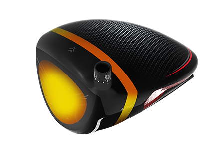
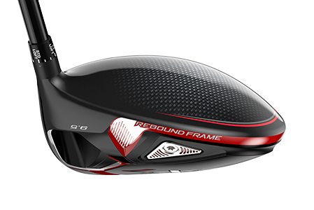
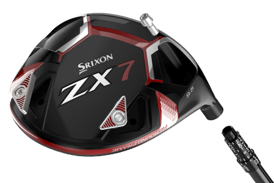
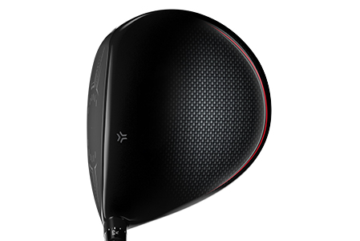
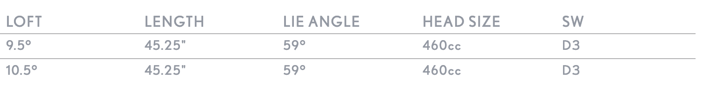

ZX7 DRIVER
Get dialled in with the all-new Srixon ZX7 Driver. Featuring Srixon’s new rebound frame technology and lightweight carbon crown, the ZX7 Driver delivers not only more ball speed, but unrivalled distance too. With adjustable weights and hosel to get your game just right, it’s time to focus your energy and get the most out of every drive with the ZX7 Driver from Srixon.
TECHNOLOGY
Rebound Frame
The rebound frame provides a more efficient transfer of energy, by focusing more energy into the golf ball. Rebound frame's unique structure increases ball speed and distance on every shot, especially centre-face impacts. This works by layering alternating zones of flexible and stiff material, maximising the transfer of energy from the golf club to the ball.
Carbon Crown
The lightweight carbon crown repositions mass low, pushing MOI up and increasing forgiveness. It’s also 15% larger than previous generations, giving you plenty of control.
Adjustability
Two weight ports allow you to move the CG and favour a draw or fade shape. An adjustable hosel also provides variation in loft, lie, and face angle.
Tour Shaping
Flatter, shallower, and straighter, this new head shape inspires confidence for highly skilled players.
Z-Forged Specs
SRIXON Z X7 Driver PRICE
529 € / 589 CHF / 5 499 SEK / 449 £